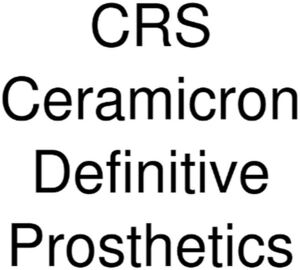

Trade Mark Journal No.2026/011 13 March 2026
WO0000001904014 (1,5,10)
Office of origin: Turkey
Date of International Registration:31 December 2025
Date of designation in the UK:
31 December 2025

International priority date claimed: 4 November 2025
(Turkey)
- Class 1
- Chemicals used in industry, science, photography, agriculture, horticulture and forestry; manures and soils; unprocessed artificial resins and unprocessed plastics; fire extinguishing compositions; adhesives not for medical, household and stationery purposes.
- Class 5
- Pharmaceutical and veterinary preparations for medical purposes; chemical preparations for medical and veterinary purposes, chemical reagents for pharmaceutical and veterinary purposes; medicated cosmetics; dietary supplements for pharmaceutical and veterinary purposes; dietary supplements; nutritional supplements; medical preparations for slimming purposes; food for babies; herbs and herbal beverages adapted for medicinal purposes; dental preparations and articles, namely, teeth filling material, dental impression material, dental adhesives and material for repairing teeth; sanitary preparations for medical use, namely, hygienic pads, hygienic tampons; plasters, materials for dressings, diapers made of paper and textiles for babies, adults and pets; preparations for destroying vermin; herbicides, fungicides, preparations for destroying rodents; deodorants, other than for human beings or for animals; air purifying preparations; air deodorising preparations; disinfectants; antiseptics; detergents for medical purposes; medicated soaps; disinfectant soaps; antibacterial hand lotions.
- Class 10
- Surgical, medical, dental and veterinary apparatus and instruments; furniture especially made for medical purposes; artificial limbs and prostheses; medical orthopaedic articles, namely, corsets for medical purposes, orthopaedic shoes, elastic bandages and supportive bandages; surgical gowns and surgical sterile sheets; adult sexual aids; condoms; babies' bottles; babies' pacifiers; teats; gum massagers for babies; bracelets and rings for medical purposes, anti-rheumatism bracelets; anti-rheumatism rings.
CRSCAM TEKNOLOJİ ANONİM ŞİRKETİ
Representative: ERDEM KAYA PATENT VE DAN. A.Ş., KONAK MAH. KUDRET SOK.,, ELİTPARK PARK SİT. OFİSLER APT. 12/27 Kat:5,, NİLÜFER, BURSA, TURKEY